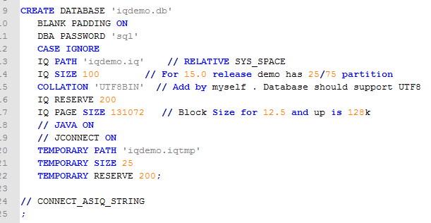
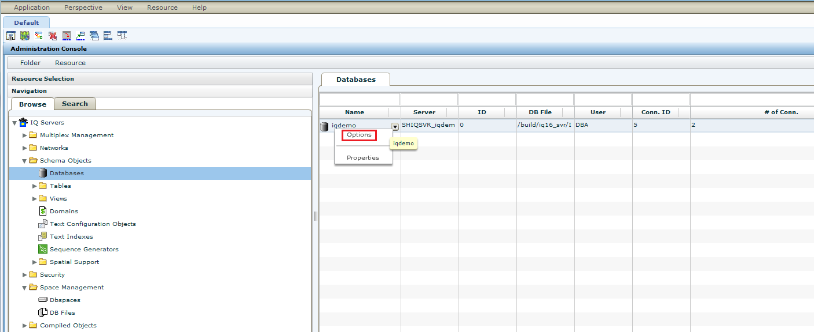
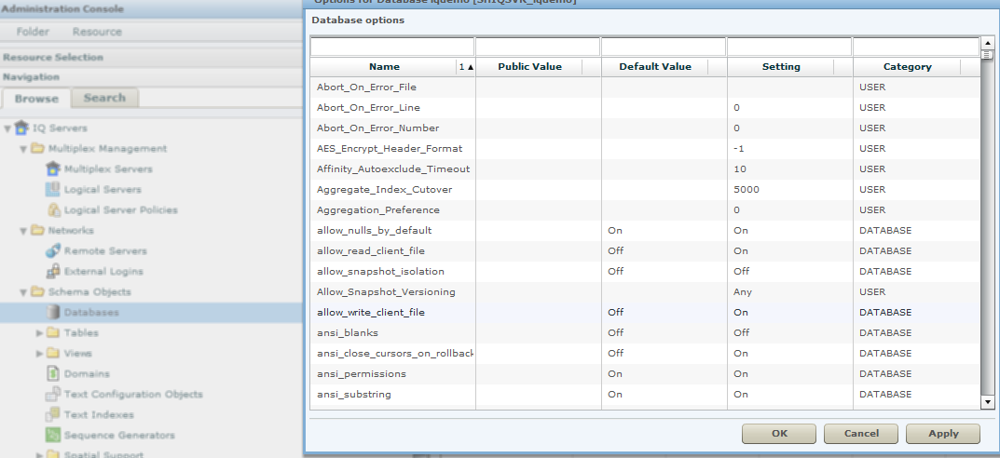

Install SybaseIQ server on Linux
why we should install IQ server on Linux?
We have found an existing bug for having IQ server installed on Windows, in order to avoid the bug, the workaround is to install IQ server on Linux.
how to install?
step1:
copy IQ server install package to the Linux machine.
1 | tar –xvf iq1600_linx8664_64_2.tgz |
step2:
you would find setup.bin in the directory, run this command: ./setup.bin then follow the install wizard to install the server.
[^note]: in the installation process, you would be asked to provide product license, please provide IQ_Nightly.lic information for it.
how to initiate IQ server and database?
after you install the server, you could follow below procedures to initiate the server and create and then initiate the database.
1 | # cd IQ-16_0 (this is the server directory) |
screenshots as below:

then run mkiqdemo.sql to crate iq server and database:
1 | # ./mkiqdemo.sql |
after that, you would notice there are some files generated in /demo, such as iqdemo.cfg, iqdemo.db.
then start the database.
1 | # start_iq@iqdemo.cfg iqdemo.db |
use SCC GUI or command line to modify database properties, such as allow_read_client_file, allow_write_client_file, conversion_error.

